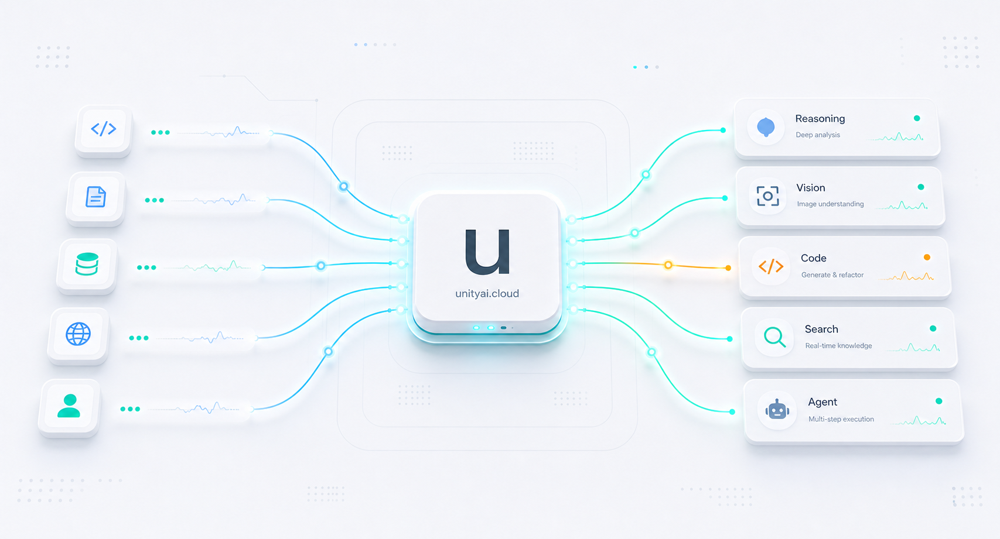

A unified gateway receives requests, evaluates policies, selects the best connected model,
and returns a consistent response shape to your app or agent.

InputApps, agents, tools
unityai.cloudPolicy, routing, logging
OutputClean normalized response
Signal Monitor
Watch quality, speed, and reliability together
Track the operational signals that matter before they become support tickets.
Keep routing decisions visible for the people shipping the product.
qualityspeedcost
Unified output95
Policy matches91
Fallback recovery88
Cost routing84
Example scorecard for a production routing dashboard.
Built for real-world impact
Give every team a reliable path from prompt to production output.
Developers
Generate, debug, and document code across stacks with provider-aware routing.
Design teams
Turn research, flows, and interface prompts into polished product artifacts.
Agencies
Standardize client work, protect margins, and keep every delivery trackable.
SMBs
Automate operations without building a dedicated AI platform team first.
AI agents
Run multi-step execution with fallback paths, logs, and consistent responses.
All your model paths, one endpoint
Connect the providers you already use and route each job by capability.
Reasoning
Deep analysis
Planning
Code review
Generation
Text output
Structured JSON
Long-form drafts
Vision
Image understanding
Document reading
Visual QA
Automation
Agent steps
Tool calls
Workflow chains
Works with your AI tools
Use compatible clients, internal apps, and automation systems through one gateway.